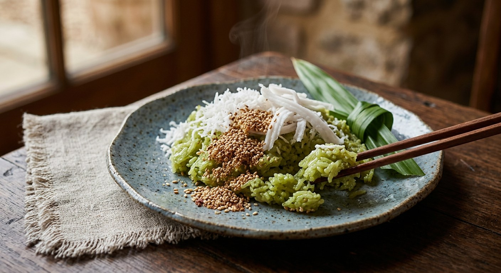

Unripe green rice roasted and pounded flat, then tossed by hand with pandan water, steamed coconut and sesame sugar — the dessert Thailand makes while the rice is still a child.

ข้าวเม่า begins with a grain that never made it to the rice bowl. Young green glutinous rice — harvested at the end of the Thai year, December, while the grains are still soft — is roasted and pounded flat into thin, fragrant, green-grey flakes. The word เม่า means to pound rice while it is still young and unripe. What comes out of the pounder is already cooked and ready to eat; the sweet is built around it, not cooked from it.
The classic form is ข้าวเม่าคลุก, the tossed version: the flaked rice is moistened with pandan-scented water, then worked by hand with steamed grated coconut until the flakes cling together, and finished with coconut strips and roasted sesame mixed with sugar. SGE Thai lists the wider family — kluk (tossed), bueang (pressed flat), bod (pounded into a paste), tod (deep-fried) and mee — and warns the sweet is getting hard to find, kept alive by cooks who still bother with its fiddly, hands-on method.
The pressed version has pedigree: ข้าวเม่าเบื้อง appears in แม่ครัวหัวป่าก์, Thanphuying Plian Phasakornwong's 1908 cookbook — Thailand's first — adapted from khanom bueang, with the khao mao kneaded with palm sugar and grated coconut and pressed into thin discs. The recipe below is the kluk, the one you meet at old markets and temple fairs.
| Thai | English | Amount |
|---|---|---|
| ข้าวเม่า | Khao mao (pounded young rice) | 500 g |
| น้ำสะอาด | Water | 1 cup |
| น้ำมะพร้าวอ่อน | Young coconut water | 1 cup |
| ใบเตยมัด | Pandan leaves, tied | 3–4 leaves |
| เกลือ | Salt | 1 tbsp |
| น้ำตาลทราย | Sugar | 3 tbsp |
| มะพร้าวทึนทึกขูดเส้น | Half-mature coconut, shredded in strips | 1 cup |
| มะพร้าวแก่ขูดละเอียด | Mature coconut, finely grated | 1 cup |
| งาขาวคั่ว | White sesame seeds, roasted | 1 cup |
| น้ำตาลคลุกงา | Sugar mixed with the roasted sesame | 1 cup |
Kapook's smaller batch: 250 g khao mao; pandan water from 5 pandan leaves, 250 ml water and 250 ml coconut water with 1 tsp salt and 3 tbsp sugar, poured over the rice while still hot; the two coconuts salted and steamed 10–15 minutes; sugar sprinkled on top at the end. EzyThaiCooking's old-school bowl: 100 g khao mao, no pandan at all — just salted water (1 tbsp salt to 2 cups water) sprinkled on gradually, with 1 cup of steamed grated half-mature coconut and 50 g sugar served separately. The pressed version (SGE Thai, after แม่ครัวหัวป่าก์): 1½ cups khao mao kneaded with 2½ cups finely grated mature coconut, ½ cup water and 1½ cups palm sugar, pressed flat into thin discs.
Pandan water or plain salted water. Aroifin, SGE Thai and Kapook scent the moistening liquid with pandan (and coconut water, boiled with sugar and salt). EzyThaiCooking's version has no pandan at all — plain water boiled with a full tablespoon of salt, sprinkled on gradually. The pandan version is the one you smell at markets; the salted-water one is the older, plainer style.
Hot or cooled. Kapook pours the pandan water over the rice while it is still hot, so the flakes soften on contact. Aroifin boils the same liquid, then leaves it to cool before tossing. Both work — the difference is how fast the rice drinks.
Sesame or not. Aroifin and SGE Thai top the sweet with roasted white sesame stirred into sugar. Kapook finishes with a sprinkle of plain sugar, and EzyThaiCooking doesn't even do that — the sugar is served in a separate bowl for guests to add themselves.
One coconut or two. Aroifin, SGE Thai and Kapook use both kinds: mature coconut finely grated (mixed in) and half-mature coconut in strips (scattered on top). EzyThaiCooking uses only the steamed half-mature coconut, grated.
Kluk or bueang. Everything above is ข้าวเม่าคลุก, the tossed sweet. The 1908 cookbook version, ข้าวเม่าเบื้อง, skips the pandan water entirely: palm sugar, water and grated coconut are kneaded in and the lot is pressed flat into discs. Same rice, entirely different texture.
This recipe is translated from the following Thai-language sources. Where they disagree, we've said so.
1. Aroifin — "วิธีทำ ข้าวเม่าคลุก สูตรโบราณ หอมใบเตย มะพร้าวหวานมันกำลังดี" by mimi (the recipe used here) — aroifin.com
2. Kapook — "วิธีทำข้าวเม่าคลุกมะพร้าว ขนมไทยอร่อยนุ่มพร้อมเคล็ดลับความหอม" (the hot pandan water and the smaller batch) — cooking.kapook.com
3. EzyThaiCooking — "สูตรขนมไทย : ขนมข้าวเม่าคลุก" (the pandan-free old-school version and the water rule) — ezythaicooking.com
4. SGE Thai — "5 สูตร ข้าวเม่า ขนมไทยโบราณ แปรรูปข้าวเหนียว สร้างมูลค่าให้มากขึ้น" (the bueang pressed version and the แม่ครัวหัวป่าก์ connection) — sgethai.com